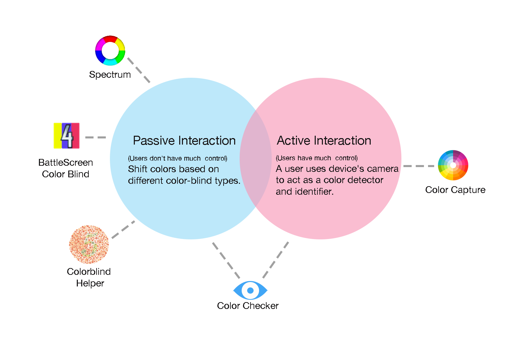
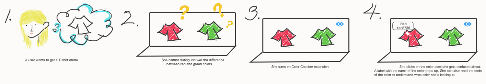
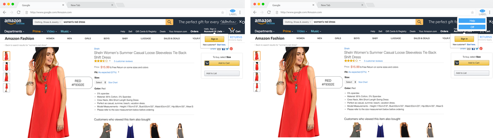
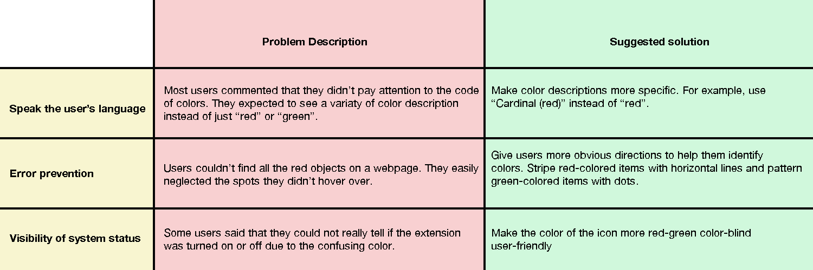

Color Checker
Color Checker is a Chrome extension designed to help red-green color-blind users distinguish colors.
Intro
-
BACKGROUND
People with red-green color blindness have a hard time telling red and green colors apart from each other. Color-blindess is causing people much trouble in daily life. Therefore, an assistive technology for red-green color-blind users is in high demand.
-
OUR RESEARCH QUESTION
How can a technology assist red-green color-blind users accurately see colors?
-
KEY GOAL
Create an assistive color-blind extension without being distracting.
STEP1. OBSERVE
Conducted interviews with red-green color-blind users.
Interviews were conducted in person. The interviews were conducted in places where participants would use technologies to distinguish colors. It's a good way to simulate the scenario and to let the interviewees express their true feelings. My interviewee chose the library because that was where he usually used Chrome browser.
Goal: We were interested in finding when/where/what/how color blind users interact with technologies.
Interview Questions
Basic information (demographic info): the purpose is to classify users based on their diversity.
1. Tell me about yourself. How old are you? What major are you/ what work do you do?
Reflections (scenario specific experiences): the purpose is to make participants reflect on their past experiences and to see what trouble they are experiencing due to color-blind.
1. Did you run into any troubles due to colorblindness? If so, what was it?
2. Do you use web applications a lot? How often do you use them?
3. Can you walk us through the websites you often use and tell us what are the features of the websites that you use the most? And show us the above stated features?
Web User Experiences (product specific experiences): the purpose is to better understand the context in which our browser extension will be used.
1. Do you use any assistive technologies, such as browser extensions, to overcome the problems? What are they? Do you find them helpful? What are the advantages and disadvantages of them?
2. Do you have any expectations of color-blind related assistive technology?
Target audience
Red-green colorblind users who have basic knowledge of using web browser.
BIOGRAPHY OF INTERVIEWEES
We interviewed 5 red-green color-blind individuals, whose ages between 20 to 67. Four are male and one female. We recruited them through posting and email. Four of them study computer- related major and one does not use computer very often.
Create affinity diagram.
Purpose: organize activity notes into common
patterns and themes across users.
Create Personas (main and secondary).
Goal: to create reliable and realistic representations of the key audience segments for reference.
Identify pain points:
1. Users can't accurately distinguish red from green.
2. Users already get used to the way they see colors. Therefore they do not really want to see a shift in colors using a Chrome extension.
Key findings
Users have the need of knowing what colors they are looking at when they can't distinguish the difference between red and green. But shifting colors would be interruptive to them.
STEP2. THINK
Brainstorm ideas based on the personas we create.
Competitor Analysis
I conducted competitor analysis to understand areas of opportunities for Color Checker.
Passive Interaction: Most existing color-blind apps, such as Spectrum, BattleScreen Color Blind and Colorblind Helper, have a feature of shifting colors based on different color-blind types. This feature doesn't give users much control as users cannot inspect colors of certain spots on a page.
Active Interaction: Some apps, such as Color Capture, have a feature of allowing users to use a device's camera to act as a color detector and identifier. This design gives users more control. But without getting any directions, color-blind users would easily neglect some spots they are supposed to inspect.

According to App Store, customer ratings for apps that designed to encourage Active interaction are higher than apps designed to encourage passive interaction.
Color Checker is designed to encourage both Active interaction and passive interaction .
Users can choose to have much control or to get directed by using the extension.
STEP3. DESIGN
Low-fi Prototype: storyboard
Since apps that designed to encourage active interaction receive higher customer ratings, we decide to first design a feature that gives user more control.
Main Features
1. Users can click on a pixel color and then read the color label to know what color they are looking at.

High-fi Prototype: software prototype (Adobe XD)

STEP4. TEST
User Testing
We asked participants to perform some tasks using the Adobe XD prototype. Participants were asked to turn on the extension and then to identify all red items on a web page.
Heuristics Evaluation
We did Heuristics evaluation based on users' feedback to understand how to improve the design.

STEP5. IMPROVE
Based on user feedback the the Heuristic evaluation, we added a feature of using different patterns to help users distinguish red and green items. The design helps users better identify all the items with the colors that they might have trouble viewing.
Logo Design Evolution
Since the target audience were red-green color blind users, I came up with the eye logo idea .
Phase1:Sketch
Phase2:Photoshop work. I used dots to represent lashes for the aesthetics of simplicity.
Phase3:after doing user testing we realized that the “closed eye” logo was not intuitive to users. Some of them got confused when seeing the “closed eye” logo. They got used to seeing a grey colored logo when an extension was turned off. Because most of them were Chrome users and Chrome extensions worked in that way. Therefore, I changed the shape and the color of the “closed eye” logo when the extension was turned off.
Phase4:final design. We realized that red-green color blind users had trouble to distinguish between the #4d8a9e color and the #434343 color. To make the colors more distinguishable, I used #41a6f6 instead of #4d8a9e in the final design.